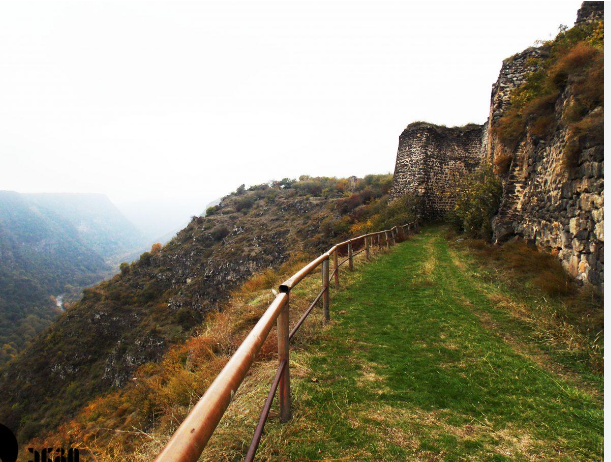
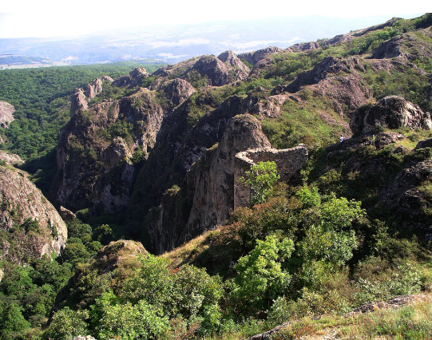

ქვემო ქართლის ტერიტორია უძველესი დროიდანვე დასახლებული იყო ქართველური ტომებით, რომელთა ხანგრძლივი ურთიერთკავშირისა და ურთიერთშერწყმის შედეგად წარმოიშვა ქართველი ხალხი.
აქ მოსახლე ტომებიდან წყაროები იცნობენ ქართველურ ტომ გუგარებს, იმავე გოგარებს. მათგან მოდის ისტორიული პროვინციის — გოგარენეს და სომხური გუგარქის სახელწოდება.
სავარაუდოა, რომ მათ სამხრეთით ცხოვრობდნენ ასევე სომხური ტომებიც, რომლებიც ძვ. წ. VII-VI საუკუნეებში ჩამოსახლდნენ.

